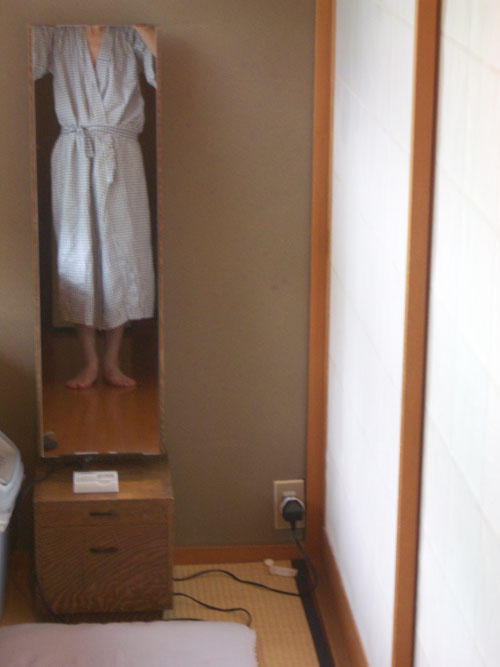
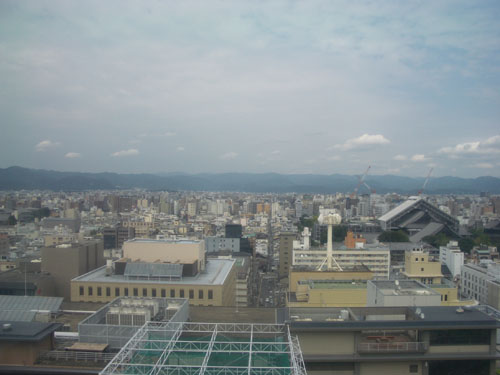
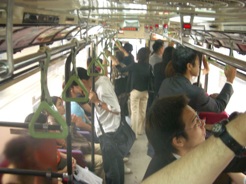
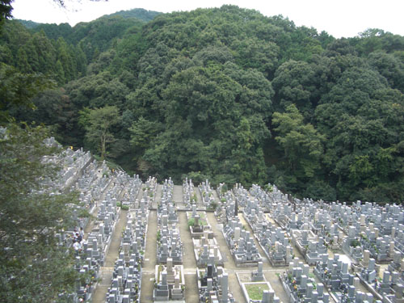
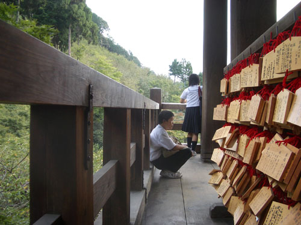
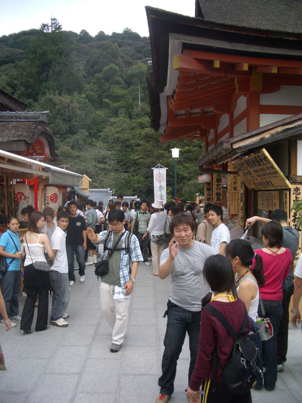
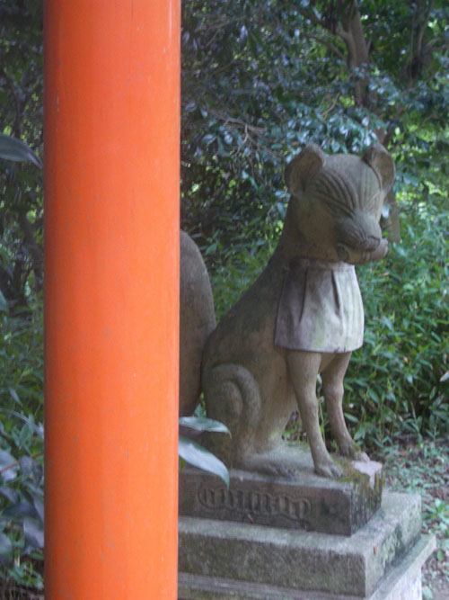
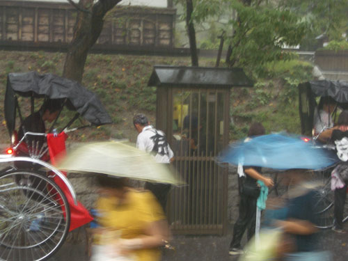
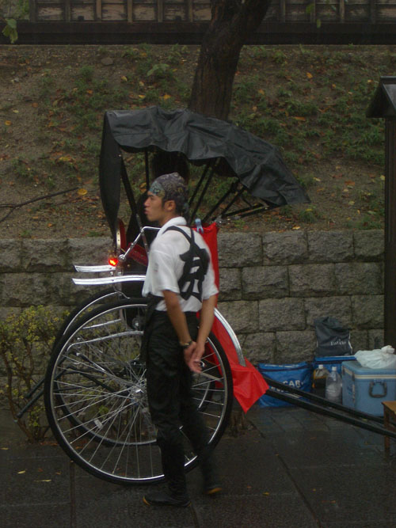
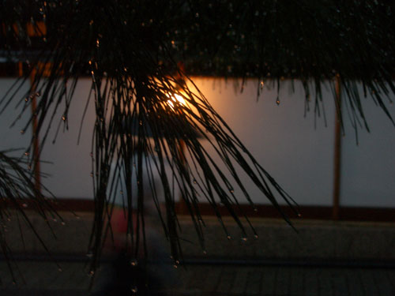

| < | > |
| Another day in Kyoto | [2004-10-11 00:16] |
 What day's today? Oh yes, Thursday. We'd arranged to meet our friend Yuichi at Gotenba station on Friday at 7 pm. Rather than stop off somewhere on the way, we decided to stay another day in Kyoto. So we headed into town and booked into a big anonymous hotel.  Today we would do the east side of the river. In order to get there – back on the bus.  First stop was Kiyomizu Temple, which was a slow thirsty walk up through the city of the dead.  Tramping round temples was beginning to give me a sense of how much supplication goes on in this world. Endless incense whiffing, coin tossing, bell pulling. To Kiyomizu they come in flocks and hordes. This was obviously a major site for wrangling with Destiny. Up the wide steps, shuffling with the crowd into the semi-rational lobby of Eternity. Not everyone was impressed.  The Love Stones at the adjacent Jishu Shrine provide some diversion for those less spiritual. If you could walk eyes shut between the two stones then your plans for love would materialize. No on made it while we were there.  Having a fondness for happy family crowds I didn't dislike all this bustling absurdity. But as we marched down hill heading for the exit it was a relief to bump into old friend kitsune ever dapper in his dirty bib.  We descended on down Teapot Lane. A sombre grey was looming from the west. Serious rain was coming. Tea shop owners smiled heavenward – their money was coming too. Luckily we found ourselves in front of the rickshaws when it happened.  It was difficult not to have mixed feelings. Paying people to pull you around in a cart seemed cruel. Yet in that costume they were the proudest of heroes, sauntering defiantly in the rain. As we crouched in a covered gateway I tried over and over to capture what seemed so evident. But try as I might I just couldn't catch it.  The rain let up and we moved on. It was getting dark now. Geisha mystery lurked everywhere as we made our way down to the bright lights of Gion.  In one last deserted dripping temple I suddenly got into ringing those big tone-deaf bells. João claimed there was a right way to do it. But for me this was personal, I had my own technique:
Each bell had its own distinctive excuse for a sound. But each and every one was a variation on "a handful of nuts and bolts rattling at the bottom of a bucket." No clear serene tones here. It was the sound of doubt scraping the bottom of the mind. |
|